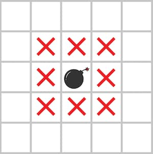

🏅 프로그래머스 120866 : 안전지대 - Javascript
문제 설명
다음 그림과 같이 지뢰가 있는 지역과 지뢰에 인접한 위, 아래, 좌, 우 대각선 칸을 모두 위험지역으로 분류합니다.

지뢰는 2차원 배열 board에 1로 표시되어 있고 board에는 지뢰가 매설 된 지역 1과, 지뢰가 없는 지역 0만 존재합니다.
지뢰가 매설된 지역의 지도 board가 매개변수로 주어질 때, 안전한 지역의 칸 수를 return하도록 solution 함수를 완성해주세요.
제한사항
- board는 배열입니다.
- 1 ≤ n ≤ 100
- 지뢰는 1로 표시되어 있습니다.
- board에는 지뢰가 있는 지역 1과 지뢰가 없는 지역 0만 존재합니다.
입출력 예
| board | result |
|---|---|
| [[0, 0, 0, 0, 0], [0, 0, 0, 0, 0], [0, 0, 0, 0, 0], [0, 0, 1, 0, 0], [0, 0, 0, 0, 0]] | 16 |
| [[0, 0, 0, 0, 0], [0, 0, 0, 0, 0], [0, 0, 0, 0, 0], [0, 0, 1, 1, 0], [0, 0, 0, 0, 0]] | 13 |
| [[1, 1, 1, 1, 1, 1], [1, 1, 1, 1, 1, 1], [1, 1, 1, 1, 1, 1], [1, 1, 1, 1, 1, 1], [1, 1, 1, 1, 1, 1], [1, 1, 1, 1, 1, 1]] | 0 |
예제 #1
(3, 2)에 지뢰가 있으므로 지뢰가 있는 지역과 지뢰와 인접한 위, 아래, 좌, 우, 대각선 총 8칸은 위험지역입니다. 따라서 16을 return합니다.예제 #2
(3, 2), (3, 3)에 지뢰가 있으므로 지뢰가 있는 지역과 지뢰와 인접한 위, 아래, 좌, 우, 대각선은 위험지역입니다. 따라서 위험지역을 제외한 칸 수 13을 return합니다.예제 #2
모든 지역에 지뢰가 있으므로 안전지역은 없습니다. 따라서 0을 return합니다.
풀이 과정
먼저 주어진 2차원 배열에서 지뢰가 매설 된 지역 주변을 안전한 지역을 위험지역으로 바꿉니다.
- 안전한 지역은 0, 지뢰가 매설 된 지역은 1로 표현되기 때문에 위험지역을 2로 표현했습니다.
그 후 남은 안전지역의 수를 반환합니다.
const SAFE = 0; //안전한 지역
const BOOM = 1; //지뢰가 매설 된 지역
const WARN = 2; //위험지역
function solution(board) {
//board는 n*n의 배열이기 때문에 n을 구함
const n = board.length;
//주어진 지역과 인접한 안전한 지역을 위험지역으로 변경하는 함수
const markWarn = (x, y) => {
//board를 벗어나지 않는 탐색 범위를 반환하는 함수
const range = (k) => [Math.max(0, k - 1), k, Math.min(n - 1, k + 1)];
//주어진 x, y로 구한 범위 내의 안전한 지역을 위험 지역으로 변경
for (const ry of range(y)) {
for (const rx of range(x)) {
if (board[ry][rx] === SAFE) {
board[ry][rx] = WARN;
}
}
}
};
//모든 요소를 순회하여 위험지역을 표시
for (let y = 0; y < n; ++y) {
for (let x = 0; x < n; ++x) {
if (board[y][x] === BOOM) {
markWarn(x, y);
}
}
}
//보드를 1차원 배열로 바꾸고, 안전한 지역의 수를 구해 반환
return board.flat().filter((el) => el === SAFE).length;
}개선
기존 방식과 정반대로, 확인할 지역과 인접 지역에 지뢰가 매설된 지역이 있는지를 확인해 안전한 지역의 수를 구하는 방식으로 변경했습니다. 이를 통해 코드를 더 직관적으로 개선할 수 있었고, 불필요하게 많은 배열 수정 및 접근 횟수를 줄일 수 있었습니다.
function solution(board) {
//board는 n*n의 배열이기 때문에 n을 구함
const n = board.length;
//주어진 지역이 안전한 지역인지 확인하는 함수
const isSafe = (x, y) => {
const range = (k) => [k - 1, k, k + 1];
//범위 내에 지뢰가 매설된 지역이 존재하면 false를 반환
for (const ry of range(y)) {
for (const rx of range(x)) {
if (board[ry]?.[rx]) {
return false;
}
}
}
//주변 지역이 모두 빈 지역이면 true를 반환
return true;
};
//모든 지역을 순회하여 안전한 지역의 수를 구해 반환
let answer = 0;
for (let y = 0; y < n; ++y) {
for (let x = 0; x < n; ++x) {
answer += isSafe(x, y);
}
}
return answer;
}문제에서 0은 안전한 지역이 아니라 지뢰가 매설되지 않은 지역을 의미하기 때문에 이 풀이가 더 자연스러운 것 같습니다. 처음에 왜 저렇게 풀었지..
숏코딩 (CodeGolf)
조금 더 코드를 간결하게 바꾸어 아래와 같이 정리할 수 있습니다.
solution=_=>_.flatMap((r,y)=>r.map((v,x)=>{for(i=-1;i<2;++i)for(j=-1;j<2;++j)if(_[y+i]?.[x+j])return 0;return 1})).filter(v=>v).length